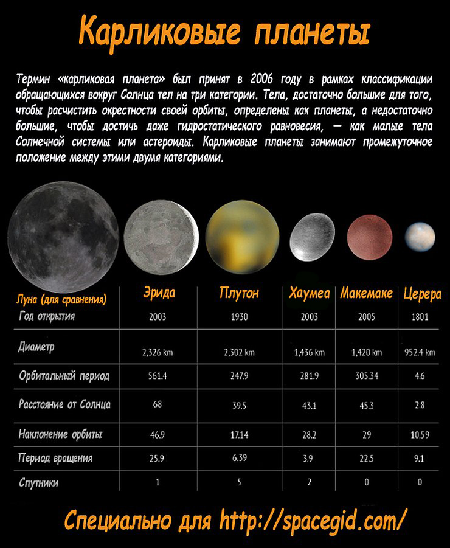
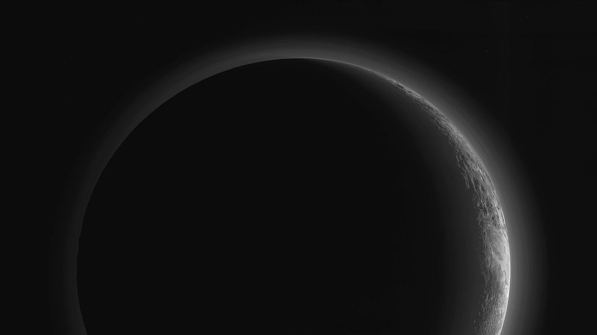
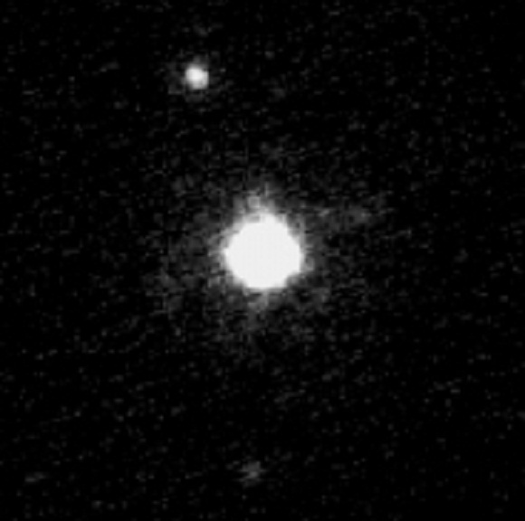
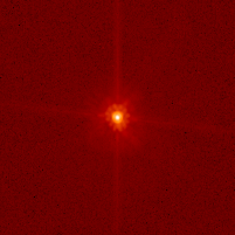
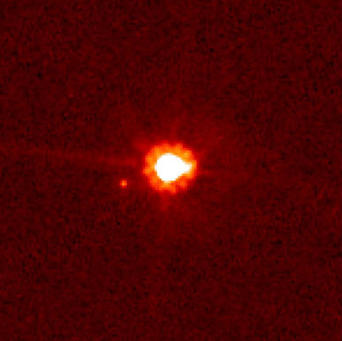
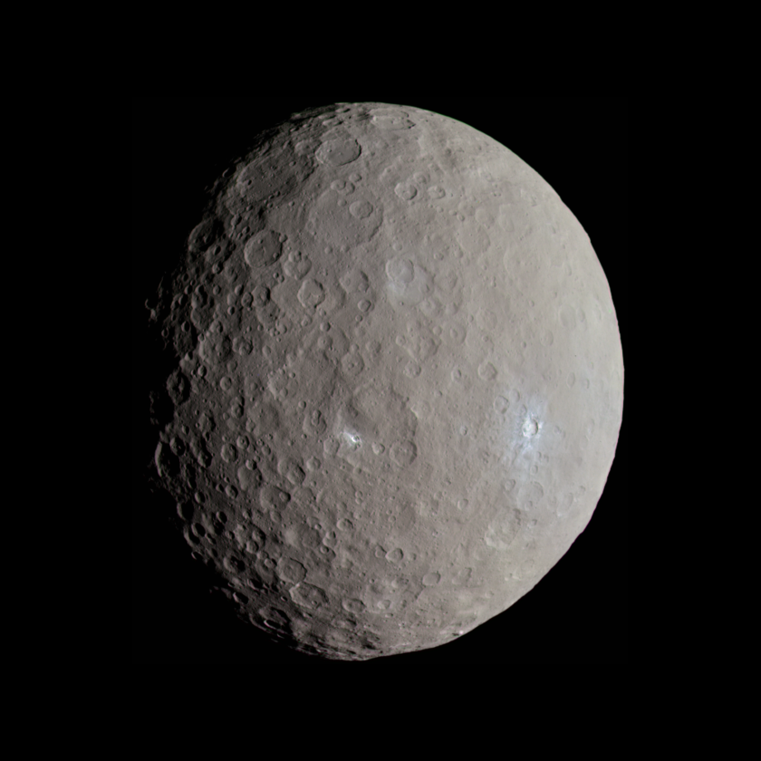

Карликовые планеты
Эта группа небесных тел пока что остается наименее изученной ввиду их удаленности от центра нашей системы, но благодаря постоянному развитию технологий астрономы постоянно восполняют пробелы в своих знаниях. 2003-2005 года были довольно «урожайными» на открытия. Современные технологии позволяет увидеть даже самый удалённый объект.
Плутон
Один из самых маленьких объектов Солнечной системы, радиусом всего 1153 км. Период обращения по орбите вокруг Солнца составляет 90 613 суток (около 248 лет), а оборот вокруг своей оси занимает 6,4 земных суток. Несколько десятилетий с момента открытия в 1930 году считался девятой планетой, пока в 2006 году астрономы не пришли к выводу, что его всё-таки стоит причислить к карликовым планетам в поясе Койпера, получившим своё название после открытия в 2005 году нескольких подобных Плутону объектов.
Хаумеа
Самая быстровращающаяся из всех планет, известных на сегодняшний день в нашей системе – один оборот вокруг собственной оси занимает всего 4 часа, в то же время как полный облёт Солнца занимает 102937 суток (почти 282 года). Один из самых маленьких объектов, средний радиус составляет всего 718 км, при этом, в отличие от остальных небесных тел, обладает неправильной, как бы сплюснутой, формой. При этом имеется и 2 спутника – Хииака и Намака.
Макемаке
Размер третьей по величине до сих пор не известен точно. Предполагается, что средний радиус приблизительно равен 740 с точностью до 17 км. Зато продолжительность года на ней удалось установить довольно точно — 111867 суток (что примерно равно 306 годам). Спутников на её орбите не обнаружено.
Эрида
Один из самых больших объектов пояса Койпера лишь ненамного превосходит Плутон – 1163 км. Оборот вокруг Солнца занимает 205 029 сут (чуть больше, чем 561 год).Обнаружившие её ученые в 2005 году изначально были уверены, что открыли 10 планету солнечной системы, но впоследствии она была признана карликовой планетой.Открытие этого небесного тела, можно сказать, положило начало новой эры для астрономии, поскольку именно факт её открытия положил начало многочисленным спорам о статусе Плутона.
Церера
Примечательна тем, что еще совсем недавно была в разряде астероидов и занимала среди них первое место по размеру. Продолжительность года, по сравнению с другим удаленными карликовыми планетами — смехотворна, всего 4,6 года.В сравнении с другими, ее диаметр не столь впечатляет и составляет 975×909 км. Период вращения вокруг оси имеет продолжительность около 0,3781 суток. У Цереры спутники не обнаружены.